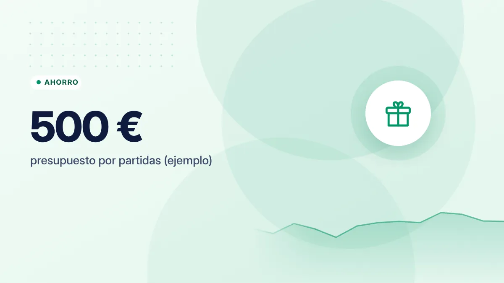

Cómo ahorrar en Navidad sin renunciar a disfrutarla
Diciembre concentra regalos, comidas, viajes y compras impulsivas. Planificarlo con tiempo es la diferencia entre disfrutar y llegar a enero en números rojos.

Puntos clave
- Fija un presupuesto total para Navidad y repártelo por partidas antes de empezar a comprar.
- Para regalos: lista con nombre y límite, y propuestas como el amigo invisible.
- Ahorra durante el año para no pagar diciembre a plazos.
Paso 1: un presupuesto para toda la Navidad
Antes de comprar el primer regalo, decide cuánto vas a gastar en total y repártelo:
| Partida | Ejemplo |
|---|---|
| Regalos | 250 € |
| Comidas y cenas | 150 € |
| Decoración | 20 € |
| Ocio y salidas | 60 € |
| Lotería | 20 € |
| Total | 500 € |
Si has ido apartando dinero durante el año (por ejemplo, 40 € al mes), ya lo tendrás. Si no, ajusta el total a lo que puedes pagar sin financiarte.
Paso 2: regalos con cabeza
- Haz una lista con cada persona y un importe máximo para cada una.
- Propón el amigo invisible en familia o con amigos: todos reciben un regalo y cada uno compra solo uno.
- Compra con antelación: en diciembre los precios de algunos productos suben y las compras se hacen con prisa.
- Compara precios y revisa el historial de precios de las tiendas online para detectar falsas rebajas.
- Regala experiencias o tiempo: una cena casera, una tarde juntos o un detalle hecho a mano.
Comidas y cenas
- Planifica el menú con tiempo y congela con antelación lo que lo permita (marisco, carne, pescado): suele ser más barato comprarlo semanas antes.
- Reparte las comidas: cada invitado aporta un plato.
- Ajusta las cantidades. En Navidad se cocina para el doble de personas y mucho acaba en la basura.
- Más trucos en cómo ahorrar en el supermercado.
Cuidado con las trampas de diciembre
- "Paga en cómodos plazos": fraccionar las compras con tarjeta o con financiación de la tienda puede tener intereses. Revisa siempre la TAE.
- Black Friday y ofertas relámpago: solo es un ahorro si ya ibas a comprarlo. Aplica la regla de las 72 horas.
- Compras online de última hora: los gastos de envío urgentes encarecen el regalo.
Si un regalo solo puedes pagarlo a plazos, probablemente es un regalo demasiado caro para este año.
Devoluciones y garantías
Guarda los tiques. En las compras online a empresas de la UE tienes, por norma general, 14 días naturales para desistir desde que recibes el producto. En tiendas físicas, la devolución depende de la política de cada comercio: pregunta antes de comprar y pide el tique regalo. Recuerda que los productos tienen además una garantía legal frente a defectos.
Evita la cuesta de enero
- Apunta todo lo que gastas en diciembre para no llevarte sorpresas.
- No uses la paga extra entera: reserva una parte para los recibos de enero.
- Empieza ya el ahorro del año que viene: si divides el gasto de esta Navidad entre 12, sabrás cuánto apartar cada mes. El reto de las 52 semanas es una buena forma de hacerlo.
En resumen
Presupuesto total por partidas, lista de regalos con límites, menú planificado y cero compras a plazos. Así la Navidad se disfruta en diciembre y no se sigue pagando en marzo.
Fuentes consultadas
Este artículo es informativo y no constituye asesoramiento financiero, fiscal ni jurídico personalizado. Las cifras son orientativas y pueden cambiar; consulta las fuentes oficiales y, si lo necesitas, a un profesional. Cómo elaboramos nuestras guías.